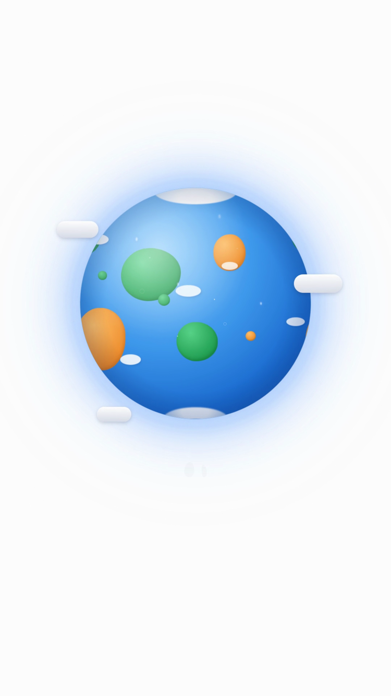
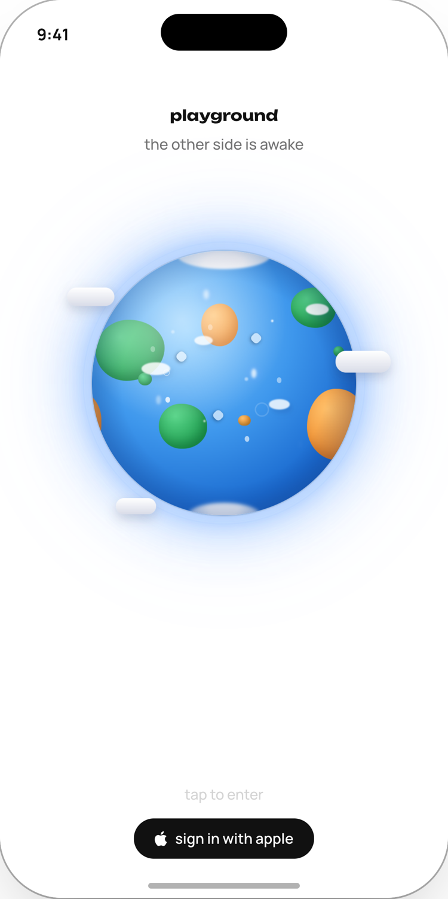

plays once, the first time the app is ever opened. every cut is one continuous shot with no edit inside it, and every one of them ends on the entry screen, because the world in the film is the same component the entry screen draws. pick a cut and a voice.
the cuts
one · the read
20.6s · Rupert · drift
the script, plainly. the world starts small enough to hold and comes to you the whole way. it turns to night on the line about things happening whether or not you are watching, and the lights come on over the land.
two · the long way out
22.7s · Graham · far
starts much further out, so the world really is a small thing in a large white room. the arriving is held back and most of it happens in the last third, over the closing line.
three · the quiet one
20.6s · Rupert · calm
barely moves and never leaves daylight. the reading where the world is calm rather than eventful. the most restrained of the four and the closest to doing nothing.
four · the breath
22.7s · Graham · breath
drifts in, settles, then takes one last step toward you on the final line. the only cut with a beat in the camera itself.
the handoff

the last frame of the film

the app, one frame later
this is the whole reason the film is rendered instead of generated. the world in the film is P.Globe, the same component the entry screen draws, on the same white, at a size and position measured off the running app by reading the live dom. the match is checked by measurement, not by eye: the world's own light reads 0.679 of frame wide at centre 0.498 in the film's last frame and 0.679 at 0.498 on the entry screen. the film does not resemble the app. it ends inside it.
the voice
Rupert
20.0s · carries every beat
Graham
22.1s · the most spacious
Mortimer
21.7s · loses the beat before the last line
Clive
17.7s · two pauses in the whole read, not unhurried
pace and pauses are measured off the wav. timbre is yours to judge, i can build the read but i cannot hear it. the cuts are timed to whichever voice they carry, so swapping a voice retimes the picture rather than stretching it.
what was rejected, and why
A
rejected. real Earth, a starfield, sun rays, and the sphere cropped past frame by the end.
B
rejected, verdict corrected 07-24. the old note said invented geography. it is real Earth too, plus a lens flare and a contact shadow, so it is an ornament on a table rather than a world.
the generated comparison
the same generator, briefed with the app's own world as the first frame instead of described in words. it holds the world: no Earth, no stars, no flare, no table. it is here because it proves the earlier failures were the brief, not the model. still not shippable: the ground drifts off pure white, a ring forms around the world, and it is ten seconds at 720p against a twenty second read at 1080.
the words
There is a world.
It is small enough to hold, and busy enough to have its own weather.
Things happen there whether or not you are watching.
Someone in it is going to be yours.
They will learn your name, and you will learn theirs.
And when you need something from out there…
…they will go, and they will bring it back to you.